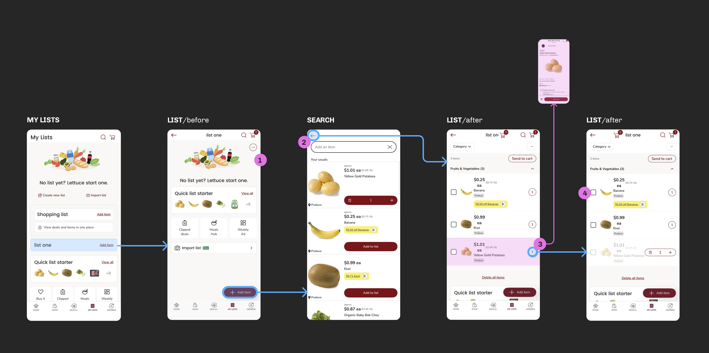
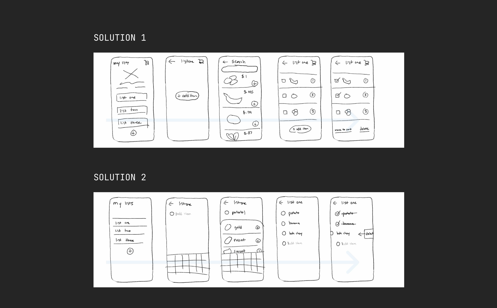

01
Clarity
Looks the same as previous page
01 / Insights
I interviewed a grocery shopper who might benefit from a redesigned app.
Naomi, 29
Software engineer / weekly grocery shopper
“I write down my list on the bus. When I'm in the store, I just want to find my items asap.”
02 / Context
I identified the main issues of the current safeway app.

01
Looks the same as previous page
02
Out of thumb reach for right-handed users
03
Clickbox for number of items is too small compared to its neighbor
04
It is unclear that the check-boxes are meant to “cross off” items
03 / Problems and Solution
I selected the most severe problem to focus my work around.
Selected Problem
Overall, the system is visually cluttered and has too many available actions. The buttons placement and size are not optimized for mobile use.
04 / Exploration
I began by sketching both solutions by hand.

05 / Abstract Flow
I mapped every screen and state for both solutions so the big picture was visible.

06 / Wireframes
First, I tested composition before detail. I then introduced color palettes, typography, and branding.


07 / Prototypes
Using components and interaction flows, I brought each solution to life.

08 / User Testing
I asked a colleague to perform specific tasks using both solution prototypes.
Task
Add one gold potato, one sweet potato and two yams, then add one more gold potato.
Result
The participant could not complete the second task without prompting. She tapped the "add item" button, which I hadn’t prototyped, instead of the kebab menu.
What it meant
I needed to either put more emphasis on the menu, prototype the "add item button", or scrap the system as it was already too complicated.
Task
Add three items, then delete one.
Result
She figured out the swipe-to-delete gesture right away and completed the task seamlessly, without any prompting.
What it meant
The task flow was completed more efficiently and successfully, which made Solution 2 the clearer direction to take forward.
“I didn’t have to think about where to go next.”
Sophie / Solution 2
I moved forward with Solution 2.
09 / Final Solution
The final design further simplifies solution 2.

Items can be typed in, selected, adjusted, and swiped away without leaving the list. Check-bubbles returned as a distinct completed state, while bulk actions moved into a single menu.
10 / Rationale
After user testing, the participant told me that changing the number of items is not super important for a grocery list, which I agree with.
Overall, the exercise showed me that for this kind of app, the simpler the better. Solution two was proven to be more intuitive, highlighting the strength of less pages, less ui elements, and less prototype interactions.
For a grocery list app, users only need to jot down names of items for future reference. I designed an app that allows them to do so without distraction.
Back to archive